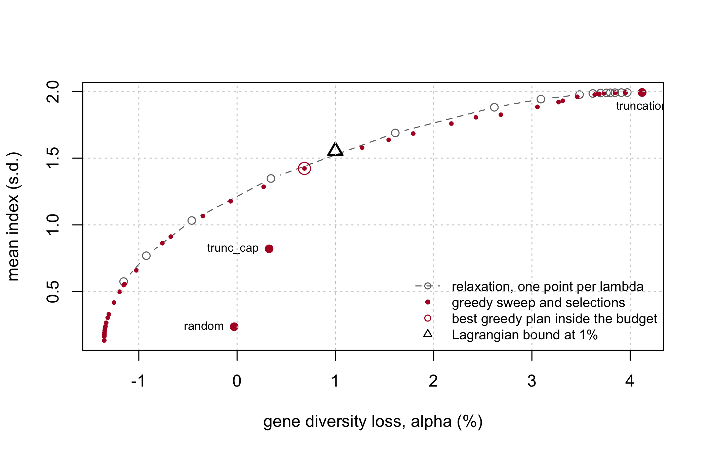
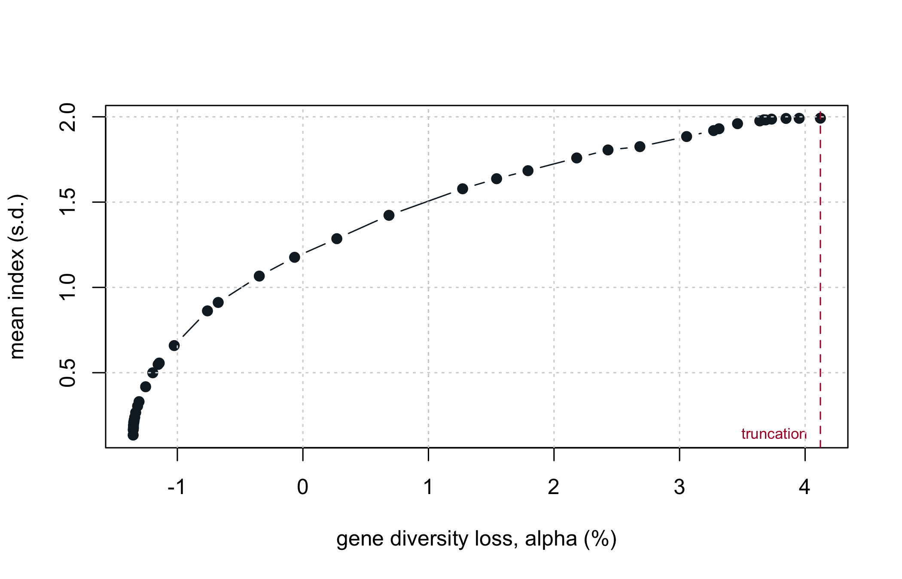

15Optimal contributions and the \(\alpha\) constraint
Section 12.6 recommends putting \(\theta\) (computed on lines) and \(N_{e,\text{par}}\) into the optimiser and keeping the expensive metrics for validation. This chapter states the optimisation problem that recommendation defines, places it in the optimal-contribution selection (OCS) literature, and says what its continuous relaxation does and does not bound. \(\alpha\) is the relative loss of gene diversity of Equation 11.15 (defined in Section 11.9),
with \(S\) a set of \(n\) hybrids, \(f_{ij}\) the molecular coancestry of hybrids \(i\) and \(j\), \(\theta_S = \mathbf{c}'\mathbf{f}\mathbf{c}\) for the contribution vector \(c_i = 1/n\) on \(S\) (theta_group()), and \(GD_{\text{ref}}\) the mean \(GD\) of random subsets of size \(n\) (gd_ref, from null_distribution()). The multi-trait index \(u_i\) is ctx$index, the known-marker-effects index of Chapter 6; Chapter 14 shows how a real programme obtains a traits matrix to hand to stage1_build() and what accuracy to expect.
15.1 What this chapter assumes
Each item is a restriction on every number below, not a remark.
Inbred parent lines (A2 of Section 10.1). Then \(\mathbf{f}\) over hybrids is a function of the line matrix \(\mathbf{f}^L\) (Section 12.1).
No dominance, an additive index (A7 of Section 10.1). \(\theta\), \(GD\) and \(\alpha\) are functions of allele frequencies alone, and \(u_i\) is additive.
The index is the truth. Every value of \(\bar u_S\) below is computed on ctx$index, not on a prediction. For an exact optimiser, the true index of the plan it finds on the truth is at least the true index of the plan it finds on predictions, so the values here are an upper limit on what selection on predicted values delivers (Section 12.5); the plans of this chapter come from heuristics, and the statement is not extended to them.
The marker panel is the causal set (A5 of Section 10.1), in every section except the panel sensitivity, where only \(\mathbf{f}\) follows the panel and the index does not (stated there).
The constraint pins one lens.\(\theta\), \(GD\) and \(\alpha\) are the homozygosity lens; \(F_{\text{drift}}\), the lens anchored on the frozen frequencies ctx$p0, is not pinned by \(\alpha\) (Chapter 10). With inbred parents \(\alpha\) acts on the total \(GD_T\), which contains the between-pool term \(GD_{BS}\) that a hybrid programme wants preserved, so a budget on \(\alpha\) does not isolate the within-pool loss (Section 4.2).
Scale. The teaching scale (A8 of Section 10.1): 25 + 25 lines, 2000 markers, \(N =\) 625 hybrids, \(n =\) 60, simulation seed 1, one founder draw, except where a sentence says otherwise.
15.2 Constraint, not a weighted sum
With \(\mathbf{u}\) the multi-trait index and \(S\) the selected set of size \(n\) (n_sel):
where \(\alpha_{\max} \in (0, 1)\) is the budget: the loss of gene diversity the programme accepts. Because \(\alpha(S) \le \alpha_{\max}\) is the same as \(\theta_S \le \theta_{\max}\) with
the constraint is a bound on a quadratic form of the contributions.
The common alternative, \(\max\; \bar u_S - \lambda\,\theta_S\) with \(\lambda \ge 0\), requires calibrating \(\lambda\), which has no direct interpretation. The constraint form has an operational meaning: “I accept losing at most \(\alpha_{\max}\) of diversity.” That is a sentence a breeding committee can approve or reject; “diversity is worth \(\lambda = 3.7\) index units” is not.
The two are not equivalent for a discrete problem. The optima of the weighted sum over all \(\lambda\) lie on the upper concave envelope of the set of pairs \((\theta_S, \bar u_S)\), so a budget that falls between two vertices of that envelope is the optimum of no \(\lambda\). The multiplier is not eliminated by the constraint form; it is moved from an input to an output: the budget implies one, and Section 15.4 reports it. The committee decides the budget; what the budget costs in index is the analyst’s to trace (Figure 15.2), and the exchange rate is read off that trace rather than chosen.
The optimiser’s fitness is printed below. decode() (R/03_de_select.R, Chapter 16) maps the \(n\) continuous keys of the differential-evolution (DE) vector to \(n\) distinct hybrids.
The budget violation is viol = max(0, alpha - alpha_max), the absolute excess in units of \(\alpha\), and the fitness subtracts penalty * viol with penalty = 1000 from \(\bar u_S\). The price per unit of \(\alpha\) is the same at every budget, so the price of an overshoot relative to the budget is not: a 10% overshoot costs \(1000 \times 0.1 \times \alpha_{\max}\) index units (Table 15.1). The optional max_use term adds, in the same fitness, the number of parent slots used beyond the cap divided by \(2n\), where max_use is the largest number of the \(n\) selected hybrids that may share one line as a parent (a count; defined and enforced in Chapter 16). It defaults to NULL, no cap, and is off in this chapter.
Table 15.1: Price of a 10% overshoot of the budget in make_fitness(), in index units (s.d.). columns: the budget \(\alpha_{\max}\); overshoot, \(0.1,\alpha_{\max}\), an absolute excess of \(\alpha\); price, \(1000 \times\) overshoot. Teaching scale; the chunk first checks penalty * viol against make_fitness() itself on the truncation plan, at a binding (1%) and an inactive (5%) budget.
\(\alpha_{\max}\)
overshoot
price (index s.d.)
0.01
0.001
1
0.05
0.005
5
So the constraint is enforced by a linear penalty, not refused at any price: a DE plan can end with a small violation, and alpha_loss() of the returned plan must be checked. The bound of Equation 15.7 treats the budget as exact.
15.2.1 The constrained form is older than this book
Kempthorne and Nordskog (1959) pose, for selection indices, the problem of maximising progress in an aggregate genotype subject to no expected change in specified linear functions of the genetic values (the problem statement was read in the full text by the reference check of this chapter; their solution was not read for this book). Chapter 4 gives the matrix form of that restricted index as the book’s own statement, not claimed to be theirs, and lists four differences that keep it from being the \(\alpha\) constraint (equality against inequality, expectation against realisation, a trait against \(GD_T\), closed form against search). The one numerical fact used here is that the restricted index holds its restricted direction at zero to rounding, on the two-trait example of Table 4.8, with \(\boldsymbol\Sigma_P\) the phenotypic and \(\boldsymbol\Sigma_G\) the genetic covariance matrix of the traits (P and Sg in the code), \(\mathbf{a}\) the economic weights and \(\mathbf{R}\) the restricted direction (moisture):
Show code
P <-matrix(c(4.0, 1.2, 1.2, 1.0), 2) # Sigma_P, as in 02bSg <-matrix(c(2.0, 0.3, 0.3, 0.3), 2) # Sigma_G, as in 02ba <-c(1, 1); R <-cbind(c(0, 1))stopifnot(all(eigen(Sg, only.values =TRUE)$values >0), # a covarianceall(eigen(P - Sg, only.values =TRUE)$values >0))cov_R <-c(unrestricted =drop(crossprod(R, Sg %*%index_smith_hazel(P, Sg, a))),restricted =drop(crossprod(R, Sg %*%index_restricted(P, Sg, a, R))))stopifnot(abs(cov_R[["restricted"]]) <1e-12, abs(cov_R[["unrestricted"]]) >0.1)
The covariance of the restricted index with the restricted trait is \(2.6 \times 10^{-17}\), against 0.143 for the unrestricted index (the chunk asserts the first is below \(10^{-12}\)). That is an expectation under known covariance matrices (Chapter 4). What is specific to this chapter is the object restricted and the way it is enforced: a loss of molecular gene diversity relative to a resampling baseline, as an inequality, by a penalty in the heuristic and as a constraint in the bound. The rest of the lineage argument, and what it does not show, is in Chapter 4.
15.3 Relation to the standard OCS formulation
Gómez-Romano et al. (2016) write the general optimal-contribution problem, for a vector of continuous contributions \(\mathbf{c}\) (their eq. 1a-1d), as
with \(\mathbf{s}\) and \(\mathbf{d}\) the indicators of the two sexes. The paper writes the coancestry matrix chosen for managing diversity \(\mathbf{G}\); it is written \(\mathbf{f}\) here, because \(\mathbf{G}\) is the VanRaden relationship matrix of this book (used for prediction only). The form that maximises gain subject to a bound on \(\mathbf{c}'\mathbf{f}\mathbf{c}\) is the one Chapter 4 reports from the Methods of Meuwissen et al. (2020) (Meuwissen (1997) reported through it and not read for this book), up to the constant \(\tfrac12\) in their group coancestry.
Equation 15.2 is that constraint form restricted to \(c_i \in \{0, 1/n\}\): a fixed number \(n\) of candidates contribute equally, none partially, and the bound is set from the random-subset baseline through Equation 15.3. The restriction makes the problem combinatorial, which moves the solution method from convex quadratic programming to search. It is not arbitrary: a commercial hybrid programme plants a whole plot of a hybrid or does not plant it.
NoteWhat the contributions are attached to
Three objects can carry a contribution: an individual, a line, a cross. In this chapter \(c_i\) is attached to a hybrid, that is, to one \(A \times B\) cross (Equation 15.2), and the diversity side of that problem is optimal-contribution selection on lines under three further restrictions (Section 12.1). The per-sex sum constraint of Equation 15.4 becomes, for hybrids of two pools, one sum per pool. “Cross” here is the \(A \times B\) hybrid. Assigning contributions to the within-pool crosses that make the next generation of lines is the problem named optimal cross selection in the title of Gorjanc et al. (2018), cited here for the name only: that paper was not read for this book, and nothing in this chapter rests on its content. The mating-design part (Chapter 18) does not solve that assignment: it treats which \(A \times B\) crosses to make and test under a field limit as a sampling problem for estimation, and reviews the literature on the other in one paragraph.
15.4 The continuous relaxation, and what it bounds
Drop \(c_i \in \{0, 1/n\}\) to \(0 \le c_i \le 1/n\) with \(\sum_i c_i = 1\). For \(\lambda \ge 0\) let
attained at \(\mathbf{c}_\lambda\), with \(\bar u_\lambda = \mathbf{c}_\lambda'\mathbf{u}\) and \(\theta_\lambda = \mathbf{c}_\lambda'\mathbf{f}\mathbf{c}_\lambda\), so that \(V(\lambda) = \bar u_\lambda - \lambda\,\theta_\lambda\). ocs_relaxation() solves it by projected gradient, with the projection below. The cap \(c_i \le 1/n\) keeps the relaxation from putting all weight on the best candidate.
Show code
project_capped_simplex#> function (v, cap) #> {#> lo <- min(v) - 1#> hi <- max(v)#> for (i in 1:60) {#> tau <- (lo + hi)/2#> if (sum(pmin(pmax(v - tau, 0), cap)) > 1) #> lo <- tau#> else hi <- tau#> }#> pmin(pmax(v - (lo + hi)/2, 0), cap)#> }#> <bytecode: 0x7a7b19c040>#> <environment: namespace:hybdiv>
Two statements about \(V(\lambda)\) hold and one that looks like them does not.
No budget (\(\lambda = 0\)).\(V(0)\) is the mean of the \(n\) largest \(u_i\), the truncation plan: the relaxation is exact when there is no constraint.
Weak duality. The equal-weight vector of any set \(S\) with \(|S| = n\) is feasible in Equation 15.5, so for every \(S\) and every \(\lambda \ge 0\)
Hence a relaxation point bounds every discrete plan at least as diverse as itself (\(\theta_S \le \theta_\lambda\) gives \(\bar u_S \le \bar u_\lambda\)). For a plan with less diversity than the point, Equation 15.6 is the tangent of slope \(\lambda\) at the point, which rises above the point’s height.
What does not follow. A budget limits \(\theta_S\) from above, and a plan that spends it has \(\theta_S\) close to \(\theta_{\max}\). For a relaxation point inside the budget (\(\theta_\lambda < \theta_{\max}\)) such a plan is less diverse than the point, and its index can exceed the point’s height. The height of “the best relaxation point whose own \(\alpha\) falls inside the budget” is therefore not an upper bound on the constrained problem. The book once used that construction; Section 17.4 shows it falling below a feasible plan.
The valid statement is Equation 15.6 evaluated at the budget and minimised over \(\lambda\). For every \(S\) with \(\theta_S \le \theta_{\max}\),
and every \(\lambda\) gives a valid bound, so a coarse grid of \(\lambda\) costs tightness, not validity. By Lagrangian duality for a convex programme (linear objective, \(\mathbf{f}\) positive semi-definite, Slater’s condition holding when a feasible \(\mathbf{c}\) has \(\mathbf{c}'\mathbf{f}\mathbf{c} < \theta_{\max}\); Boyd and Vandenberghe (2004), section 5.2.3) the minimum over all\(\lambda\) equals the optimum of the continuous problem \(\max\,\mathbf{c}'\mathbf{u}\) with \(\mathbf{c}'\mathbf{f}\mathbf{c} \le \theta_{\max}\) in the same box, the continuous frontier at the budget, and taking \(\theta_{\max} = \theta_S\) in Equation 15.7 shows that a discrete plan lies on or below that frontier at its own \(\alpha\). The frontier is concave in the budget, so the chord between two points of a \(\lambda\) grid lies below it, and the height of the last grid point inside the budget is below it by an amount that depends on the grid. ocs_bound() returns the minimum over a grid (one row per \(\lambda\) in Table 15.2), doubles the number of projected-gradient iterations until the bound value \(V(\lambda) + \lambda\theta_{\max}\) changes by less than a relative tol = 1e-3, and carries a converged attribute (a stalling criterion on the doubling, not a certificate); the iteration count that converges at this scale does not at \(N = 10{,}000\) (Section 17.7).
Show code
# One call returns the grid of lambda, the converged relaxation points and the bound.lam_grid <-10^seq(0, 2.5, by =1/6) # 16 multipliers, 1 to 316am <-0.01# the budget alpha_maxgd <- null$gd_refbound <-ocs_bound(ctx, n_sel, am, gd, lambdas = lam_grid)relax <-attr(bound, "relaxation") # one row per lambda, convergeda_relax <- (gd - relax[, "GD"]) / gdtheta_max <-1- gd * (1- am)u_top <-mean(sort(ctx$index, decreasing =TRUE)[seq_len(n_sel)])stopifnot(attr(bound, "converged"),abs(u_top -mean_index(tr, ctx)) <1e-12, # V(0) = truncationabs(relax[1, "index"] -mean_index(tr, ctx)) <1e-6, # lambda = 1 already isisTRUE(all.equal(as.numeric(bound),min(relax[, "index"] - relax[, "lambda"] * relax[, "theta"] + relax[, "lambda"] * theta_max))))
Table 15.2: The continuous relaxation, one row per multiplier \(\lambda\) (Equation 15.5), from ocs_bound() at the 1% budget (ocs_bound() doubled its iterations from 4000 until the value moved by less than 0.1%). columns: \(\bar u_\lambda\) in index s.d.; \(\theta_\lambda\); \(GD_\lambda = 1 - \theta_\lambda\); \(\alpha\) of the point against gd_ref from null_distribution() (\(B\) = 400 random subsets of \(n\) = 60, seed 7); last column, \(V(\lambda) + \lambda\theta_{\max}\) of Equation 15.7 at \(\alpha_{\max}\) = 1%. Teaching scale, simulation seed 1. Four decimals.
\(\lambda\)
\(\bar u_\lambda\)
\(\theta_\lambda\)
\(GD_\lambda\)
\(\alpha\)
\(V(\lambda) + \lambda\theta_{\max}\)
1.0000
1.9919
0.6876
0.3124
0.0412
1.9818
1.4678
1.9913
0.6871
0.3129
0.0397
1.9771
2.1544
1.9910
0.6869
0.3131
0.0391
1.9705
3.1623
1.9904
0.6867
0.3133
0.0385
1.9611
4.6416
1.9898
0.6865
0.3135
0.0380
1.9475
6.8129
1.9891
0.6864
0.3136
0.0376
1.9278
10.0000
1.9873
0.6862
0.3138
0.0370
1.8994
14.6780
1.9844
0.6860
0.3140
0.0362
1.8591
21.5443
1.9758
0.6855
0.3145
0.0348
1.8014
31.6228
1.9418
0.6842
0.3158
0.0309
1.7263
46.4159
1.8808
0.6827
0.3173
0.0262
1.6361
68.1292
1.6886
0.6794
0.3206
0.0161
1.5532
100.0000
1.3473
0.6753
0.3247
0.0034
1.5609
146.7799
1.0325
0.6727
0.3273
-0.0046
1.7315
215.4435
0.7689
0.6712
0.3288
-0.0092
2.1192
316.2278
0.5753
0.6704
0.3296
-0.0115
2.7951
The first row of Table 15.2 coincides with the truncation plan (statement 1; the chunk asserts it); \(\alpha\) then falls as \(\lambda\) rises. The last column is the quantity of Equation 15.7 at each \(\lambda\) of the grid; its minimum, 1.5532, is at \(\lambda^* =\) 68.1, reached with 8000 iterations (converged is TRUE). \(\lambda^*\) is the multiplier the 1% budget implies on this grid, in index units per unit of \(\theta\); per percentage point of \(\alpha\) it is 0.22 index units.
The other discrete plans are the greedy sweep over the index weight \(\omega\) (argument w of sel_greedy(), score \(\omega u_i - \theta\)), on a logarithmic grid of 60 values from \(10^{-6}\) to \(10^{-1}\). The grid is logarithmic because the increments of \(\theta\) are of order \(10^{-3}\) and the differences of \(u_i\) of order 1, so \(\omega\) above about \(10^{-2}\) returns the truncation plan and \(\omega\) below about \(10^{-5}\) returns nearly the maximum-diversity plan: the frontier lives between.
Show code
ws <-10^seq(-6, -1, length.out =60)front <-do.call(rbind, lapply(ws, function(w) { s <-sel_greedy(ctx, n_sel, w = w)data.frame(w = w, alpha =alpha_loss(s, ctx, gd), index =mean_index(s, ctx),Ne_par =ne_parents(s, ctx),theta =theta_group(s, ctx))}))a_trunc <-alpha_loss(tr, ctx, gd) # alpha of the truncation plann_trunc <-sum(abs(front$alpha - a_trunc) <1e-9) # grid values that return truncationkey <-round(front[, c("alpha", "index")], 8)n_distinct <-sum(!duplicated(key))stopifnot(n_distinct >=20, # the frontier is not degenerate n_trunc <nrow(front)) # ... and it leaves truncationinb <- front$alpha <= ambest_greedy <-max(front$index[inb])best_relax <-max(relax[a_relax <= am, "index"])stopifnot(best_relax < best_greedy, best_greedy <as.numeric(bound))
At the 1% budget three numbers are in play. The best relaxation point of the grid with \(\alpha \le\) 1% has index 1.3473; the best greedy plan inside the budget, at \(\alpha =\) 0.00685, has index 1.4226; the bound of Equation 15.7 is 1.5532. The chunk asserts the order relaxation point \(<\) feasible plan \(<\) bound. A feasible plan above a relaxation point inside the budget shows that the height of that point is not a ceiling (Figure 15.1); the bound, which is one, lies above both. The gap between the greedy plan and the bound, 0.131 index units, is an upper limit on what a better search could gain at this budget on this dataset, and only if converged is TRUE, as it is here; closing it is the subject of Chapter 17.
Show code
set.seed(42)sels <-list(random =sel_random(ctx, n_sel), trunc_cap =sel_truncation_cap(ctx, n_sel),truncation = tr)pts <-t(sapply(sels, function(s)c(alpha =alpha_loss(s, ctx, gd), index =mean_index(s, ctx))))plot(a_relax *100, relax[, "index"], type ="b", pch =1, lty =2, col = book_pal[["mid"]],xlab ="gene diversity loss, alpha (%)", ylab ="mean index (s.d.)",xlim =range(c(a_relax, pts[, "alpha"], front$alpha) *100),ylim =range(c(relax[, "index"], pts[, "index"], front$index, as.numeric(bound))))points(front$alpha *100, front$index, pch =20, cex =0.7, col = book_pal[["loss"]])points(pts[, "alpha"] *100, pts[, "index"], pch =19, col = book_pal[["loss"]])text(pts[, "alpha"] *100, pts[, "index"], rownames(pts), pos =c(2, 2, 1), cex =0.7)j <-which(inb)[which.max(front$index[inb])]points(front$alpha[j] *100, front$index[j], pch =1, cex =1.6, col = book_pal[["loss"]])points(am *100, as.numeric(bound), pch =2, cex =1.4, lwd =2)abline(v = am *100, lty =3)legend("bottomright",c("relaxation, one point per lambda", "greedy sweep and selections","best greedy plan inside the budget", "Lagrangian bound at 1%"),col =c(book_pal[["mid"]], book_pal[["loss"]], book_pal[["loss"]], "black"), pch =c(1, 20, 1, 2),lty =c(2, NA, NA, NA), bty ="n", cex =0.8)grid()

Figure 15.1: The continuous relaxation (grey circles, one per \(\lambda\) of Table 15.2, joined by chords) and discrete plans (red: the greedy sweep of 60 index weights and three selections) on the plane of gene diversity loss \(\alpha\) against mean index. Dotted vertical line: the 1% budget. Triangle: the Lagrangian bound of Equation 15.7 at that budget, from ocs_bound() (\(\lambda\) grid of 16 values, converged). Open red circle: the best greedy plan with \(\alpha \le\) 1%, which lies above the highest relaxation point inside the budget and below the triangle. The height of a relaxation point is not a ceiling for plans that spend more of the budget; the triangle is. Teaching scale (25 + 25 lines, 2000 markers, \(n\) = 60, \(N\) = 625), simulation seed 1; random: one random subset, set.seed(42).
WarningAn under-converged relaxation reports a value that is too small
Projected gradient approaches \(V(\lambda)\) from below, so an under-converged relaxation understates \(V(\lambda)\) and, with it, the bound of Equation 15.7, which then stops being one. The diagnostic is the penalised value \(V = \bar u_\lambda - \lambda\,\theta_\lambda\) (Table 15.3), not the index: by Equation 15.6\(V(\lambda) \ge \bar u_S - \lambda\theta_S\) for every discrete plan, so a relaxation whose \(V\) is below a discrete plan’s is not converged. The index of a converged relaxation can lie below that of a discrete plan with no contradiction, because the relaxation is the more diverse and pays \(\lambda\) per unit of \(\theta\).
Show code
lam <-10its <-c(50, 500, 4000, 16000)conv <-do.call(rbind, lapply(its, function(it) { r <-ocs_relaxation(ctx, n_sel, lam, iters = it)data.frame(iterations = it, index = r[, "index"], theta = r[, "theta"],V = r[, "index"] - lam * r[, "theta"], row.names =NULL)}))disc <-data.frame(iterations =NA, index =mean_index(tr, ctx),theta =theta_group(tr, ctx),V =mean_index(tr, ctx) - lam *theta_group(tr, ctx))rel_change <-abs(conv$V[4] - conv$V[3]) /abs(conv$V[3])stopifnot(conv$V[1] < disc$V, # 50 iterations: V below a feasible plan conv$V[3] >= disc$V, # 4000 iterations: V above itall(diff(conv$V) >=0), # V rises with iterations rel_change <1e-3) # the tol of ocs_bound(), applied here to V# weak duality (eq. ocs-weak) for every discrete plan of the chapter, lambda = 10plans <-c(sels, lapply(seq_len(nrow(front)), function(i) sel_greedy(ctx, n_sel, w = front$w[i])))Vplan <-vapply(plans, function(s) mean_index(s, ctx) - lam *theta_group(s, ctx), numeric(1))stopifnot(all(Vplan <= conv$V[4] +1e-8))knitr::kable(fmt(rbind(conv, disc), 4),col.names =c("iterations", "$\\bar u_\\lambda$", "$\\theta_\\lambda$","$V = \\bar u_\\lambda - \\lambda\\theta_\\lambda$"))
Table 15.3: Convergence of the relaxation at \(\lambda\) = 10 against the number of projected-gradient iterations. columns: \(\bar u_\lambda\); \(\theta_\lambda\); \(V = \bar u_\lambda - \lambda\theta_\lambda\), the penalised value. Last row: the truncation plan, which is discrete (V computed with its own index and \(\theta\)). Teaching scale, simulation seed 1; four decimals.
iterations
\(\bar u_\lambda\)
\(\theta_\lambda\)
\(V = \bar u_\lambda - \lambda\theta_\lambda\)
50
1.6059
0.6800
-5.1939
500
1.9826
0.6862
-4.8790
4000
1.9873
0.6862
-4.8748
16000
1.9873
0.6862
-4.8748
NA
1.9919
0.6876
-4.8840
At 50 iterations \(V\) is -5.1939, below the discrete plan’s -4.884; at 4000 it is -4.8748, above; from 4000 to 16000 it moves by \(1.8 \times 10^{-4}\)% (Table 15.3). The chunk asserts that ordering, that \(V\) does not fall as iterations grow, that the relative change in \(V\) from 4000 to 16000 iterations is below \(10^{-3}\), and that no discrete plan of the chapter (all 63 of them) has a penalised value above the converged \(V\). The tolerance is the same relative \(10^{-3}\) as the tol of ocs_bound(), but ocs_bound() applies it to the bound value \(V(\lambda) + \lambda\theta_{\max}\), not to \(V\) at \(\lambda = 10\). “Converged” here means that relative change at \(\lambda = 10\) at this scale: a stalling criterion, the value stopped moving as the count grew, not a certificate that it equals \(V(\lambda)\). This chapter does not measure larger \(\lambda\) or larger \(N\); ocs_bound() doubles the count and checks the change in the bound value at each \(\lambda\) grid it is given, rather than assuming that a count that stalls here stalls there.
15.5 Setting the budget
The budget should not be chosen a priori. Pure truncation, the unconstrained optimum of the index, has loss \(\alpha_{\text{trunc}}\): the \(\alpha\) at which the constraint stops binding. It is not the largest \(\alpha\) any \(n\)-subset reaches (a minimum-diversity selection would exceed it); it is the largest a gain-maximising selection ever needs (Section 11.9). A budget \(\alpha_{\max} \ge \alpha_{\text{trunc}}\) restricts nothing, and stage2_select() warns about any requested \(\alpha\) above this ceiling rather than return an unconstrained plan that looks constrained. Here \(\alpha_{\text{trunc}} =\) 0.0412 for \(B\) = 400 random subsets; it depends on \(B\) in the third decimal.
Figure 15.2 traces what each budget costs: the greedy frontier over the index weight \(\omega\) of the grid above. The frontier is the set of feasible plans the greedy finds; it is a lower bound on the constrained optimum, not the optimum. Table 15.4 lists a subset of its plans.
Show code
fd <- front[!duplicated(key), ]fd <- fd[order(fd$alpha), ]plot(fd$alpha *100, fd$index, type ="b", pch =19, col = book_pal[["ink"]],xlab ="gene diversity loss, alpha (%)", ylab ="mean index (s.d.)")abline(v = a_trunc *100, lty =2, col = book_pal[["loss"]])abline(v = am *100, lty =3)text(a_trunc *100, min(fd$index), "truncation", pos =2, cex =0.7, col = book_pal[["loss"]])grid()

Figure 15.2: The greedy frontier over the index weight \(\omega\) (60 values, logarithmic from \(10^{-6}\) to \(10^{-1}\)): mean index against gene diversity loss \(\alpha\), one point per distinct plan; plans that coincide are drawn once. Dashed red line: \(\alpha_{\text{trunc}}\), the loss of the truncation plan; dotted: the 1% budget of Figure 15.1. Teaching scale, simulation seed 1, \(n\) = 60, \(N\) = 625; \(\alpha\) against gd_ref from \(B\) = 400 random subsets (seed 7).
Show code
sub <- fd[seq(1, nrow(fd), by =6), c("w", "alpha", "index", "Ne_par")]sub$w <-format(sub$w, digits =2, scientific =TRUE) # w spans five decadesknitr::kable(fmt(sub, 4), row.names =FALSE, col.names =c("$\\omega$", "$\\alpha$", "$\\bar u_S$", "$N_{e,\\text{par}}$"))# secant slopes of the frontier between fixed levels of alpha (percent)lev <-c(-1, 0, 1, 2, 3, 100* a_trunc)ip <-approx(fd$alpha *100, fd$index, xout = lev)$ysecant <-diff(ip) /diff(lev) # index per percentage point of alpha
Table 15.4: Every sixth distinct plan of the greedy frontier of Figure 15.2, in order of \(\alpha\). columns: index weight \(\omega\); \(\alpha\) (proportion); mean index \(\bar u_S\) (s.d.); effective number of parents \(N_{e,\text{par}}\). Four decimals; teaching scale, simulation seed 1.
\(\omega\)
\(\alpha\)
\(\bar u_S\)
\(N_{e,\text{par}}\)
1.0e-06
-0.0135
0.1343
37.3057
1.3e-05
-0.0134
0.2237
35.6436
4.1e-05
-0.0120
0.4996
33.3333
1.3e-04
-0.0035
1.0663
26.7658
4.2e-04
0.0179
1.6841
18.1360
1.4e-03
0.0331
1.9301
14.4289
4.4e-03
0.0385
1.9904
13.7143
Of the 60 values of \(\omega\), 39 give distinct plans and 11 return the truncation plan (Table 15.4). Linear interpolation of the distinct plans gives, between \(\alpha\) = -1, 0, 1, 2, 3% and \(\alpha_{\text{trunc}}\), a secant slope of 0.52, 0.31, 0.22, 0.15, 0.1 index units per percentage point of \(\alpha\). This shows that on this dataset the cost of diversity is largest at low \(\alpha\) and falls towards \(\alpha_{\text{trunc}}\); the greedy frontier is a heuristic, not the optimum, and the slopes are secants of a noisy curve. It does not locate a sharp knee, and none is claimed. Where along it to set the budget is the committee’s decision. A grid of \(\omega\) in the wrong units (the integers \(1, 2, 3, \dots\), say) returns the truncation plan for every value and the frontier collapses to one point; the grid has to be in the units of \(\omega\) that move the plan, which is why the chunk asserts that the sweep has at least 20 distinct plans.
15.5.1 How \(\alpha_{\text{trunc}}\) moves when \(\mathbf{f}\) moves
\(\alpha_{\text{trunc}}\) is quoted to four decimals, which invites more confidence than the marker panel supports. The same panel feeds \(\mathbf{f}\) and therefore \(GD_{\text{ref}}\) and \(\alpha_{\text{trunc}}\). In the experiment below \(\mathbf{f}\), the null and \(\alpha_{\text{trunc}}\) are rebuilt under a minor-allele-frequency (MAF) filter, a density and an ascertainment scenario (Table 15.5), but the index is not: ctx$traits stays the one made from all markers, so A5 (the panel is the causal set) is dropped here and the result concerns a fixed index with a thinned \(\mathbf{f}\), not a change of genotyping platform. Each panel’s null is null_distribution() with its default seed 7, so the random subsets are the same draws of hybrids in every panel.
Table 15.5: \(GD_{\text{ref}}\) and \(\alpha_{\text{trunc}}\) under five marker panels, one founder draw (simulation seed 1, teaching scale, \(n\) = 60). markers: panel size; \(GD_{\text{ref}}\): mean \(GD\) of \(B\) = 250 random subsets; \(\alpha_{\text{trunc}}\): loss of the truncation plan. MAF filters on the frozen pool frequencies ctx$p0; the last row keeps the markers polymorphic in pool A. Four decimals.
panel
markers
\(GD_{\text{ref}}\)
\(\alpha_{\text{trunc}}\)
MAF >= 0.00
2000
0.3258
0.0411
MAF >= 0.01
1934
0.3369
0.0411
MAF >= 0.05
1780
0.3611
0.0404
MAF >= 0.10
1585
0.3881
0.0402
ascertained in pool A
1762
0.3535
0.0421
On this founder draw \(GD_{\text{ref}}\) moves by 19% across these panels and \(\alpha_{\text{trunc}}\) by 4.7% (Table 15.5). One founder draw does not say how typical that is. The same five panels, with the thinning of Table 15.7, were rebuilt on 20 founder draws (simulation seeds 1 to 20; Table 15.6; Rscript book/scripts/regenerate.R ocs_panel, which writes book/data/ocs_panel_sweep.csv and is reproducible from this repository).
Table 15.6: Movement of \(GD_{\text{ref}}\) and of \(\alpha_{\text{trunc}}\) across the five marker panels of Table 15.5, over 20 founder draws (simulation seeds 1 to 20; teaching scale, \(n\) = 60). For each draw the movement is \(100(\max/\min - 1)\) over the five panels, in percent. Rows: mean, s.d., minimum, maximum and median over the 20 draws, and the value of seed 1. Two decimals.
statistic
\(GD_{\text{ref}}\) movement (%)
\(\alpha_{\text{trunc}}\) movement (%)
mean
19.13
7.76
sd
1.13
4.40
min
17.72
1.28
max
21.30
16.78
median
18.98
6.72
seed1
19.13
4.65
Across the 20 draws \(GD_{\text{ref}}\) moves by a mean of 19.1% (range 17.7 to 21.3%) and \(\alpha_{\text{trunc}}\) by a mean of 7.8% (s.d. 4.4, range 1.3 to 16.8%), about 2.5 times less than the level; seed 1, the draw of Table 15.5, is 4.7%, below the median of 6.7%. The chunk asserts that the seed-1 value of this file equals the live value of Table 15.5. This measures that the budget ceiling moves less than the diversity level it is computed from, not that it does not move. A ratio of two diversities measured on the same panel cancels the part of the shift that numerator and denominator share; the table shows that cancellation is partial. A budget is therefore more portable across panels than \(GD_{\text{ref}}\), not invariant to them, and the spread is a property of this simulator at this scale (25 + 25 lines, 2000 markers), not measured at another.
Density adds noise (Table 15.7). Each draw’s panel was thinned to 250, 500 and 1000 markers, six independent subsets each, the subsets drawn before any null_distribution() call (the callout on null_distribution() below).
Show code
full <- sw[sw[["panel"]] =="MAF >= 0.00", c("seed", "alpha_trunc")]names(full)[2] <-"a_full"th <-merge(sw[grepl("thinned", sw[["panel"]]), ], full, by ="seed")agg <-function(d) { m <-mean(d$alpha_trunc); s <-sd(d$alpha_trunc)data.frame(m = m, s = s, diff = m - d$a_full[1])}by_draw <-do.call(rbind, lapply(split(th, list(th$markers, th$seed)), function(d)cbind(markers = d$markers[1], seed = d$seed[1], agg(d))))stopifnot(nrow(by_draw) ==60)thin_tab <-do.call(rbind, lapply(split(by_draw, by_draw$markers), function(d)data.frame(markers = d$markers[1], bias =mean(d$diff),se =sd(d$diff) /sqrt(nrow(d)),rel_sd_median =median(100* d$s / d$m),rel_sd_min =min(100* d$s / d$m), rel_sd_max =max(100* d$s / d$m),within_1sd =sum(abs(d$diff) <= d$s))))thin_tab[c("bias", "se")] <-lapply(thin_tab[c("bias", "se")], formatC, format ="f", digits =4)knitr::kable(fmt(thin_tab, 1), row.names =FALSE,col.names =c("markers", "bias", "s.e. of bias", "rel. s.d. median (%)","rel. s.d. min (%)", "rel. s.d. max (%)", "draws within 1 s.d."))
Table 15.7: \(\alpha_{\text{trunc}}\) under random thinning of the marker panel, over 20 founder draws (simulation seeds 1 to 20; teaching scale, \(n\) = 60). The full-panel value is from \(B\) = 250 random subsets, the thinned values from \(B\) = 200. markers: panel size (full panel 2000); bias: mean over draws of (mean of 6 thinned subsets minus the full-panel \(\alpha_{\text{trunc}}\)); s.e. of bias: its standard error over draws; rel. s.d.: s.d. of the 6 subsets divided by their mean, in percent, median, minimum and maximum over draws; draws within 1 s.d.: draws, of 20, in which the mean of the 6 subsets lies within one s.d. of the full-panel value. Four decimals for the bias, one for rel_sd.
markers
bias
s.e. of bias
rel. s.d. median (%)
rel. s.d. min (%)
rel. s.d. max (%)
draws within 1 s.d.
250
-0.0004
0.0011
36.1
9.8
81.0
20
500
0.0008
0.0009
24.3
7.6
60.0
19
1000
0.0001
0.0004
10.7
5.8
26.4
19
At 250 markers the mean over six subsets differs from the full-panel value by -0.0004 on average (s.e. 0.0011 over draws), inside one s.d. of the six subsets in 20 of 20 draws; the s.d. itself is a median of 36% of the estimate (range 10 to 81%) (Table 15.7). That is a measurement on six subsets per cell, with no interval on the s.d. itself. What it supports is that no bias of a thin panel’s \(\alpha_{\text{trunc}}\) was detected over founder draws, at a resolution of about 0.002 (two standard errors at 250 markers, against a mean full-panel \(\alpha_{\text{trunc}}\) of 0.037), so a bias of a few percent of \(\alpha_{\text{trunc}}\) is not excluded; and that a single study gets an estimate with a relative spread of a third. A single thin-panel study cannot tell which side of the full-panel value it landed on.
Warningnull_distribution() reseeds, and will freeze a resampling loop
It calls set.seed(seed) on entry, with seed = 7 by default, so the random stream is reset every time it is invoked. Any sample() written after it inside a loop draws the same values on every pass, and a replication study becomes one replicate reported with a spurious standard deviation. The chunk checks the mechanism.
Show code
draw_after_null <-function() {null_distribution(ctx, n_sel, B =5, B_full =1)sample.int(ctx$m, 5)}stopifnot(identical(draw_after_null(), draw_after_null()))
Draw randomisation up front, as the cached sweep does, or pass a varying seed.
WarningQuote \(\alpha_{\text{trunc}}\) and the budget with the panel that produced them
\(\alpha_{\text{trunc}}\) is a property of the germplasm and the marker panel. Re-derive it whenever the panel changes and do not compare an \(\alpha\) across studies genotyped differently. The spread measured above is across founder draws at one platform and one scale; it is not a measure of the difference between two real platforms.
15.6 A caveat carried over from the OCS literature
Gómez-Romano et al. (2016) (p. 7, their Fig. 1 and p. 8, their Fig. 2) study contributions optimised under a restriction on the rate of regional genomic coancestry (the whole genome except one chromosome, strategy CHR_ove), with populations of \(N = 20, 100, 200\) candidates. They compute the expected rate of coancestry in the next generation as follows (Equation 15.8):
with \(\mathbf{c}_t\) the contributions, \(\mathbf{G}_{x,t}\) the coancestry matrix of the candidates computed from marker genotypes (for the region in question) and \(f_t\) the mean coancestry of the candidates’ generation (written \(\mathbf{f}\) and \(\bar f\) elsewhere in this book). Two measurements are reported.
Fig. 1: with the restriction set at 0.1%, the realised rate was approximately 1.4%, 0.3% and 0.2% for \(N = 20, 100, 200\), always above the restriction while the expected rate met it; the gap between expected and realised rate tended to grow as \(N\) fell.
Fig. 2: for three sets of parents with the contributions held fixed, 1000 offspring generations were drawn; the realised average coancestry was always above the expected value, and the observed rate was approximately double the intended rate (at \(N = 20\)).
The paper’s Discussion (p. 11) states that the predicted value “was consistently biased downward” and that the bias grew as \(N\) fell, and suggests that terms from Mendelian inheritance variance are missing from an equation derived for the infinitesimal model with pedigree coancestry; that is the authors’ suggestion, not a derivation. No single factor of two follows from these: it is about 2 in one resampling analysis at \(N = 20\) and about 14, 3 and 2 against the restriction at \(N = 20, 100, 200\). Whether the same bias holds for the whole-genome \(\mathbf{c}'\mathbf{f}\mathbf{c}\) of this book, at other \(N\) and for hybrids, is not shown by that paper.
This does not affect the \(\theta_S\) computed in this book: \(\mathbf{f}\) is measured on the marker genotypes of an already-realised hybrid population, with no forward-prediction step. It becomes relevant when the pipeline plans a further generation from the selected hybrids, predicting their offspring’s coancestry from a contribution vector: the direction of the bias reported is that \(\mathbf{c}'\mathbf{f}\mathbf{c}\) underestimates the realised coancestry, and a budget on a predicted coancestry would need a margin whose size is not measured here.
15.7 Quadratic programming, when contributions are continuous
Where the problem genuinely is continuous (composing a synthetic, assembling a core collection, setting seed proportions) it is solved as a quadratic programme (QP) rather than by search: optimal_contributions() of Chapter 3, with ocs_quadprog() adding the merit term. The example below (Table 15.8) uses all 50 lines, with \(\mathbf{f}^L\) the line coancestry and, as the merit of a line, the mean index of the hybrids that use it as a parent (line_merit). That is a value of the line against a tester, the other pool as a whole (not the line alone), computed on the known index and not on a prediction. quadprog is a Suggests package; the chunk runs only where it is installed.
Table 15.8: Continuous optimal contributions on the 50 lines of the teaching scale (ocs_quadprog()), one row per penalty \(\lambda\), with each line capped at 20% of the pooled contribution (upper = 0.20). merit: \(\mathbf{c}'\mathbf{g}\) with \(g_a\) the mean index of the hybrids that have line \(a\) as a parent; coancestry: \(\mathbf{c}'\mathbf{f}^L\mathbf{c}\); lines used: lines with \(c_a > 10^{-6}\); share of pool A: total contribution of pool A. Four decimals.
\(\lambda\)
merit
coancestry
lines used
share of pool A
0.1000
1.4443
0.7262
5
0.6000
0.2683
1.4443
0.7262
5
0.6000
0.7197
1.4443
0.7262
5
0.6000
1.9307
1.4370
0.7197
7
0.6000
5.1795
1.4280
0.7170
10
0.5636
13.8950
1.2474
0.6973
16
0.5637
37.2759
0.8178
0.6786
31
0.5221
100.0000
0.4079
0.6714
40
0.5058
upper = 0.20 is a share of the pooled contribution, which sums to one over the 50 lines, with a single margin: the QP of Chapter 3 has no per-pool sum, and the share of pool A shows what that permits (the hybrid problem requires each pool to carry one half; Section 12.1). The cap max_use of the discrete problem is a count of hybrids; in contribution weights \(w_a = k_a/(2n)\) (with \(k_a\) the number of times line \(a\) is a parent of the \(n\) selected hybrids, so \(\sum_a w_a = 1\)) it is \(w_a \le \texttt{max\_use}/(2n)\), so upper\(= \texttt{max\_use}/(2n)\) puts the two on one scale, and upper = 0.20 at \(n\) = 60 corresponds to max_use = 24. They are the same restriction in kind, an operational ceiling on one line’s use that is easier to defend than the \(\lambda\) that produced it, not the same constraint: the first caps a share of a continuous vector, the second a count in a discrete selection enforced in the decoder (Chapter 16). The chunk asserts that each solution sums to one and respects the cap.
As \(\lambda\) falls the solution concentrates on fewer lines, which the lines-used column shows, down to the five lines that the 20% cap allows at least. The same mechanism makes \(N_{e,\text{par}}\) a second restriction in the discrete problem of Section 12.6; the fitness printed above carries only the budget (and, when set, max_use), not \(N_{e,\text{par}}\). The merit here has no correlated prediction error, so the concentration shown is the concentration of the truth; the effect of selecting on predicted values, where error is correlated with relatedness, is Section 12.5.
15.8 What belongs in the inner loop
The optimiser performs on the order of \(10^5\) to \(10^6\) evaluations (the defaults of sel_de() give NP x itermax = 600,000 fitness calls at most), so the cost per call decides what goes into the objective and what waits for validation. Section 12.2 times the metrics and reports that the matrix route and the line route of Section 12.1 agree to numerical precision, that the line route is slower per call at \(N = 2{,}500\), \(n = 50\) and cheaper only for large \(n\), and that it is the only one that exists at \(N = 22{,}500\): it is the route that scales, not a faster call at the scale of this chapter. This chapter times nothing. What Section 12.6 puts in the objective is \(\theta\) (by the matrix or line route) and \(N_{e,\text{par}}\); allelic richness and A-NE (accession-to-nearest-entry distance, Chapter 11) are kept for validation of the returned plan. This chapter computes none of them, nor Nei’s \(G_{st}\) (gst()); where they are computed, and at what cost, is Section 12.2 and Section 12.6.
Reproduce this chapter
All the code of this chapter, in order and with the explanation kept as comments, is one script: 09-optimal-contributions.R. Download it, install hybdiv, and run it top to bottom in an empty directory; cached results are fetched on first use.
Boyd, S., and L. Vandenberghe. 2004. Convex Optimization. Cambridge University Press.
Gómez-Romano, F., B. Villanueva, J. Fernández, J. A. Woolliams, and R. Pong-Wong. 2016. “The Use of Genomic Coancestry Matrices in the Optimisation of Contributions to Maintain Genetic Diversity at Specific Regions of the Genome.”Genetics Selection Evolution 48: 2. https://doi.org/10.1186/s12711-015-0172-y.
Gorjanc, G., R. C. Gaynor, and J. M. Hickey. 2018. “Optimal Cross Selection for Long-Term Genetic Gain in Two-Part Programs with Rapid Recurrent Genomic Selection.”Theoretical and Applied Genetics 131: 1953–66. https://doi.org/10.1007/s00122-018-3125-3.
Kempthorne, Oscar, and Arne W. Nordskog. 1959. “Restricted Selection Indices.”Biometrics 15 (1): 10–19. https://doi.org/10.2307/2527598.
Meuwissen, T. H. E. 1997. “Maximizing the Response of Selection with a Predefined Rate of Inbreeding.”Journal of Animal Science 75 (4): 934–40. https://doi.org/10.2527/1997.754934x.
Meuwissen, T. H. E., A. K. Sonesson, G. Gebregiwergis, and J. A. Woolliams. 2020. “Management of Genetic Diversity in the Era of Genomics.”Frontiers in Genetics 11: 880. https://doi.org/10.3389/fgene.2020.00880.